[12-3] 读写备份寄存器&实时时钟 — 学习笔记
- 课程：江协科技《STM32入门教程-2023版 细致讲解 中文字幕》
- 视频：BV1th411z7sn?p=43，52:06（3126 秒）
- 素材：240 帧关键帧（每 13 秒，宽 1280px）+ PP-OCRv4 画面硬字幕 OCR（719 段）；关键截图 16 张随笔记收录（源图在
vidsum_out/stm32_p43/frames/，站内图片在assets/images/stm32-43/） - 字幕情况：该集 B 站没有 CC/AI 字幕，文本由画面烧录的中文字幕 OCR 得到（source=subtitle-ocr）；错字主要是
寄存器→ 「奇存器」、编译→ 「扁译」、晶振→ 「显振」、读取→ 「卖取」、数据→ 「数居」、电源→ 「由源」、STM32→ 「SIM32/SM32」；并混入编译/下载输出（Flash Load finished at …）——这些不是口述内容，已剔除/校正（清单见文末「存疑」）。 - 本集定位：这是模块 12 的代码课，两个独立程序（都从复制 OLED 显示屏工程起步）：①
12-2 读写备份寄存器（BKP，含 PB1 按键）、②12-2 实时时钟（RTC，无按键，新建 MyRTC 模块放在 System 目录）。结尾 52:00 是 DIV 线性变换的扩展演示，无下集预告。
一句话结论
接线：OLED 接 I2C（老演员）、PB1 接按键；板子右上角的 VBAT 引脚用飞线接 ST-Link 的 3.3V 输出——因为套件里没配纽扣电池，所以用 ST-Link 3.3V 模拟备用电池，绝不能接到 5V（VBAT 不支持 5V 供电）。RTC 的 32.768kHz 外部低速晶振板载自带，不用接线、也不用管。程序①（12-2 读写备份寄存器）：思路就是 PPT 里的几条——开 PWR+BKP 时钟 → 用 PWR 函数使能对 BKP/RTC 的访问 → 调用 BKP 的写/读函数。库函数：BKP_WriteBackupRegister(uint16_t BKP_DR, uint16_t Data)（第二个参数是 16 位整数，第一个参数写哪个 DR）、uint16_t BKP_ReadBackupRegister(uint16_t BKP_DR)（返回值就是该 DR 里存的值）；辅助函数 BKP_DeInit（恢复缺省配置，可手动清空所有 DR 数据）、BKP_TamperPinLevelConfig（TAMPER 有效电平）、BKP_TamperPinCmd（是否开启侵入检测）、BKP_RTCOutputConfig（时钟输出）、BKP_SetRTCCalibrationValue（写 RTC 校准寄存器）——后者都了解即可。PWR 侧只有一个关键函数 PWR_BackupAccessCmd：转定义可见内部就是 *(__IO uint32_t *) CR_DBP_BB = (uint32_t)NewState;，即置 PWR_CR 寄存器的 DBP 位——对应 PPT 的「使能对 BKP 和 RTC 的访问」。注意 PWR 和 BKP 都是 APB1 外设，两个时钟都要开（只开 BKP 不行，必须先开 PWR 时钟）。BKP 初版代码：uint16_t ArrayWrite[] = {0x1234, 0x5678};、OLED_Init(); → RCC_APB1PeriphClockCmd(RCC_APB1Periph_PWR/BKP, ENABLE) → PWR_BackupAccessCmd(ENABLE) → BKP_WriteBackupRegister(BKP_DR1, 0x1234) → OLED_ShowHexNum(1, 1, BKP_ReadBackupRegister(BKP_DR1), 4)。现象测试：下载后显示 1234；不带备用电池时上电 BKP 为 0；复位不清空；断主电源（VDD）后数据仍是 1234；把备用电源（VBAT）也拔掉 → BKP 清零——完全符合预期。BKP 完善版：OLED 显示 W: / R: 两行，加按键（Key_Init()、Key_GetNum()），主循环里 if (KeyNum == 1) { ArrayWrite[0]++; ArrayWrite[1]++; BKP_WriteBackupRegister(BKP_DR1, ArrayWrite[0]); BKP_WriteBackupRegister(BKP_DR2, ArrayWrite[1]); }，同时不停读取 DR1/DR2 刷新显示；现象：上电 W 空、读出 00000000；按键后 W:1235 5679、R:1235 5679（写入前已自增，所以不是默认的 1234/5678），再按继续变化，读写始终一致。程序②（12-2 实时时钟）：复制 OLED 工程改名，新建 MyRTC 模块（放 System 目录）。MyRTC_Init 八步（顺序就是核心）：① 开 PWR+BKP 时钟 → ② PWR_BackupAccessCmd(ENABLE) → ③ RCC_LSEConfig(RCC_LSE_ON)（LSE 为了省电默认关闭，必须手动开）→ ④ while (RCC_GetFlagStatus(RCC_FLAG_LSERDY) != SET);（启动后必须等 LSERDY 置 1 才算就绪）→ ⑤ RCC_RTCCLKConfig(RCC_RTCCLKSource_LSE)（选 RTCCLK 数据选择器，可选 LSE/LSI/HSE÷128）→ ⑥ RCC_RTCCLKCmd(ENABLE) → ⑦ RTC_WaitForSynchro() + RTC_WaitForLastTask()（两个等待函数，是安全保障，防止时钟不同步/上次写未完，不写一般也没大问题）→ ⑧ RTC_SetPrescaler(32768 - 1) + RTC_WaitForLastTask()、RTC_SetCounter(1672588795) + RTC_WaitForLastTask()。注意 RTC 没有结构体、也没有 RTC_Cmd——开时钟后计数器就自动运行了；进入配置模式由 RTC_SetCounter/RTC_SetPrescaler 内部自动进出（不用手动 EnterConfigMode），但每个写操作后都要 RTC_WaitForLastTask()。预分频写 32768-1（计数值含 0）；若改用 LSI 40kHz → RTC_SetPrescaler(40000-1)，且要把时钟源换成 RCC_LSICmd(ENABLE) + 等 RCC_FLAG_LSIRDY + RCC_RTCCLKSource_LSI。main 初测：OLED_ShowNum(1, 1, RTC_GetCounter(), 10)，下载后数字按 1 秒自增即成功。坑：有些板子 RTC 晶振起振不了，程序会卡在等 LSERDY——备选方案是改用 LSI；根治起振问题得从硬件下手（改晶振/起振电容）。MyRTC_SetTime / MyRTC_ReadTime：全局数组 uint16_t MyRTC_Time[] = {2023, 01, 01, 23, 59, 55};（顺序是年/月/日/时/分/秒；因为 2023 超过 uint8_t 范围，所以整个数组用 16 位，「稍微浪费」）；#include <time.h>；SetTime：把数组填进 struct tm（tm_year = MyRTC_Time[0] - 1900、tm_mon = MyRTC_Time[1] - 1、tm_mday/tm_hour/tm_min/tm_sec 对应下标 2/3/4/5）→ time_cnt = mktime(&time_date) → RTC_SetCounter(time_cnt) + RTC_WaitForLastTask()；ReadTime 反向：time_cnt = RTC_GetCounter() → time_date = *localtime(&time_cnt) → 回填数组（年 +1900、月 +1）。两个 C 语言坑：① 十进制常数前面千万不要随意补 0——C 语言前导 0 表示八进制：09 是非法数字会报错、0123 实际是八进制的 123（0123 != 123，if (123 == 0123) 不成立）；作者还提到「之前 51 单片机教程里密码判断出错」就是同源问题；② 函数定义写在调用之后会报错——要么前置声明，要么调整顺序（作者把 MyRTC_SetTime 的定义挪到调用之前）；头文件里的全局数组要加 extern 声明。时区（关键收尾）：STM32 上没有系统时区概念，localtime/gmtime 都按 0 时区（伦敦）处理——所以想显示真正的北京时间，读取时要在秒数上加 8*60*60（28800）、写入时减去 8*60*60（不能只在「小时」上 +8，要考虑进位）。掉电保持：之前每次复位都调用 MyRTC_SetTime() 会把时间重置——解决办法是用 BKP_DR1 存一个标志 0xA5A5：上电先 BKP_ReadBackupRegister(BKP_DR1) 判断，不等于标志（说明是全新上电/完全断电）才执行完整初始化并写入标志；等于标志说明「初始化过且备用电池没断过」，只调 RTC_WaitForSynchro() + RTC_WaitForLastTask() 即可。测试：复位时间继续走、断主电源继续走、完全断电后 DR1 清零 → 重新初始化。扩展：RTC_GetDivider() 的 DIV 在 32767→0 自减，可用 (32767 - RTC_GetDivider()) / 32767 * 999 线性映射到 0～999（得到毫秒/厘秒级时间）。
0. 本集定位：代码课（两个独立程序：BKP 与 RTC）
- 程序①：
12-2 读写备份寄存器（BKP + 按键，验证掉电保持特性）； - 程序②：
12-2 实时时钟（RTC，新建 MyRTC 模块，含初始化/设置时间/读取时间，最后加时区偏移与掉电保持判断）； - 两者都从复制 OLED 显示屏工程起步，互不相干（不要混成一个）；
- 结尾 52:00 是
RTC_GetDivider()的线性变换扩展，无下集预告。
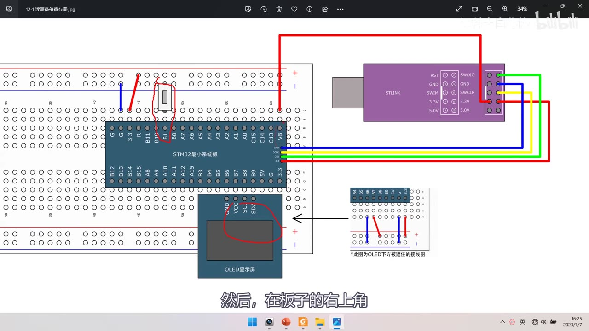
图 1：接线图 12-2 读写备份寄存器——STM32 最小系统板 + ST-Link + OLED + 按键（PB1 处红笔标注）；红框标出：板子右上角的 VBAT 引脚用飞线接到 ST-Link 的 3.3V 输出（模拟备用电池）；右下角注明 *此图为OLED下方被遮挡的接线图；字幕「然后，在板子的右上角」
1. 接线与工程准备
12-2 读写备份寄存器接线：OLED（I2C）、PB1 接按键、VBAT 引脚飞线接 ST-Link 的 3.3V 输出；- 为什么用 ST-Link 的 3.3V 模拟备用电池：套件里没配纽扣电池——实际产品一般用 3V 纽扣电池（接法见上一集 PPT 的两种参考电路）；
- ⚠ 绝不能接 5V：从引脚标号上看 ST-Link 有 3.3V 和 5.0V 两组输出，VBAT 不支持 5V 供电，一定要接 3.3V 那根；
12-2 实时时钟接线：同样 VBAT 接 3.3V；不用按键；RTC 的外部 32.768kHz 晶振板载自带（晶振电路不用接线、不用管）；- 工程：回到工程文件夹，复制 OLED 显示屏工程，改成对应名字（
12-2 读写备份寄存器/ 后面12-2 实时时钟），编译。
2. 程序①：读写备份寄存器（BKP）
2.1 编程思路
对照上一集 PPT 的操作注意事项，就三条：
- 开启 PWR 和 BKP 的时钟；
- 用 PWR 函数使能对 BKP 和 RTC 的访问；
- 调用 BKP 的写入函数 / 读取函数。
2.2 BKP 与 PWR 库函数
stm32f10x_bkp.h 里的函数：
| 函数 | 作用 |
|---|---|
BKP_DeInit(void) |
恢复缺省配置——可用来手动清空 BKP 所有数据寄存器（有备用电池时 BKP 平时不会清零，想清空就调它，或把所有 DR 全写 0） |
BKP_TamperPinLevelConfig(uint16_t BKP_TamperPinLevel) |
配置 TAMPER 引脚有效电平（高电平触发还是低电平触发） |
BKP_TamperPinCmd(FunctionalState NewState) |
是否开启侵入检测功能 |
BKP_ITConfig / BKP_GetFlagStatus / BKP_ClearFlag / BKP_GetITStatus / BKP_ClearITPendingBit |
中断、标志位相关 |
BKP_RTCOutputConfig(uint16_t BKP_RTCOutputSource) |
RTC 时钟输出功能的配置 |
BKP_SetRTCCalibrationValue(uint8_t CalibrationValue) |
写 RTC 校准寄存器 |
BKP_WriteBackupRegister(uint16_t BKP_DR, uint16_t Data) |
写备份寄存器：第一个参数写哪个 DR，第二个参数是16 位整型数据 |
BKP_ReadBackupRegister(uint16_t BKP_DR) |
读备份寄存器：返回值就是该 DR 里存的值 |
BKP_DRx的 x 范围：参数可以是BKP_DR1～BKP_DR42，但只有大容量和互联型才有 42 个 DR；中/小容量（含 F103C8T6）只有 DR1～DR10；stm32f10x_pwr.h里只需要一个函数：PWR_BackupAccessCmd——转定义可见内部是*(__IO uint32_t *) CR_DBP_BB = (uint32_t)NewState;，即置PWR_CR的 DBP 位（对应 PPT「使能对 BKP 和 RTC 的访问」）。
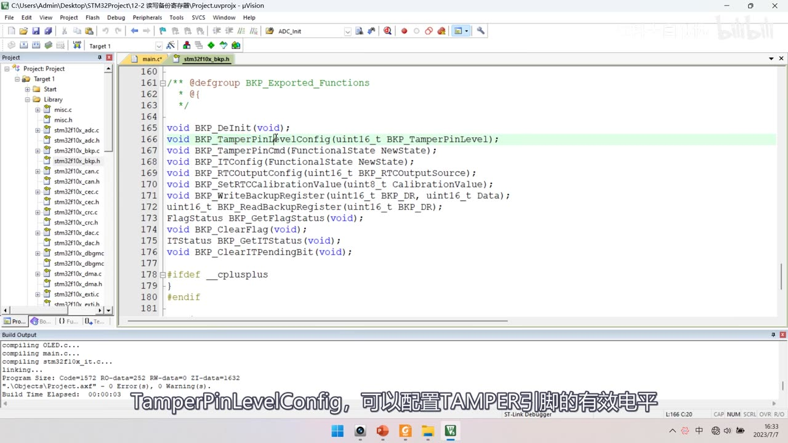
图 2：stm32f10x_bkp.h 的库函数声明表——BKP_DeInit、BKP_TamperPinLevelConfig(uint16_t BKP_TamperPinLevel)（高亮）、BKP_TamperPinCmd、BKP_ITConfig、BKP_RTCOutputConfig、BKP_SetRTCCalibrationValue、BKP_WriteBackupRegister(uint16_t BKP_DR, uint16_t Data)、uint16_t BKP_ReadBackupRegister(uint16_t BKP_DR)、BKP_GetFlagStatus、BKP_ClearFlag、BKP_GetITStatus、BKP_ClearITPendingBit；字幕「TamperPinLevelConfig，可以配置TAMPER引脚的有效电平」
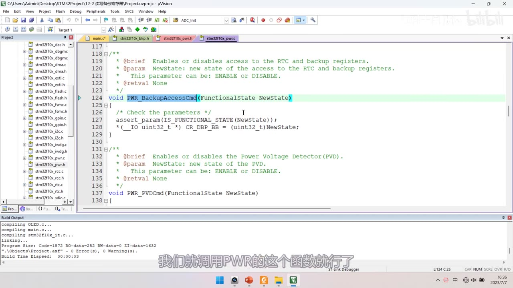
图 3：PWR_BackupAccessCmd 源码——注释「Enables or disables access to the RTC and backup registers」，函数体 assert_param(IS_FUNCTIONAL_STATE(NewState)); *(__IO uint32_t *) CR_DBP_BB = (uint32_t)NewState;（即置 PWR_CR 的 DBP 位）；字幕「我们就调用PWR的这个函数就行了」
2.3 初版代码与现象
uint16_t ArrayWrite[] = {0x1234, 0x5678};
uint16_t ArrayRead[2];
int main(void)
{
OLED_Init();
/* ① 开时钟：PWR 和 BKP 都是 APB1 外设，两个都要开 */
RCC_APB1PeriphClockCmd(RCC_APB1Periph_PWR, ENABLE);
RCC_APB1PeriphClockCmd(RCC_APB1Periph_BKP, ENABLE);
/* ② 使能对 BKP 和 RTC 的访问（置 PWR_CR 的 DBP 位） */
PWR_BackupAccessCmd(ENABLE);
/* ③ 写 / 读备份寄存器 */
// BKP_WriteBackupRegister(BKP_DR1, 0x1234);
OLED_ShowHexNum(1, 1, BKP_ReadBackupRegister(BKP_DR1), 4);
while (1) { }
}
- 现象测试：下载后 OLED 显示
1234； - 不带备用电池时：上电 BKP 是 0；
- 复位：不会清空 BKP，数据仍是 1234；
- 断主电源（VDD）：数据仍是 1234；
- 把备用电源（VBAT）也拔掉：BKP 清零——「如果没有备用电源，BKP 的数据是维持不了的」，符合实验预期；
- 小结：BKP 的实验只需知道特性、会读写即可。
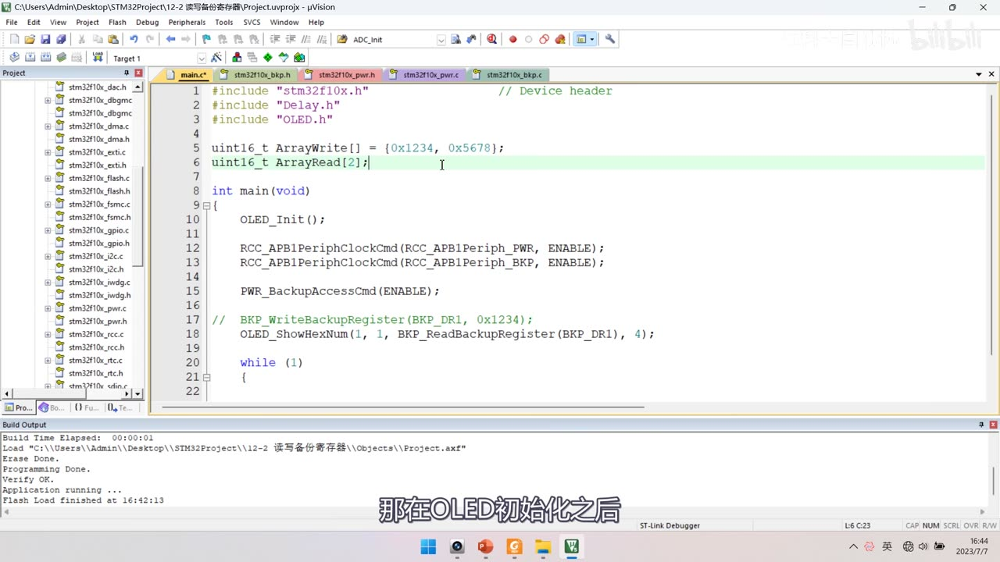
图 4：BKP main.c 初版——uint16_t ArrayWrite[] = {0x1234, 0x5678};、uint16_t ArrayRead[2];、OLED_Init();、RCC_APB1PeriphClockCmd(RCC_APB1Periph_PWR, ENABLE);、RCC_APB1PeriphClockCmd(RCC_APB1Periph_BKP, ENABLE);、PWR_BackupAccessCmd(ENABLE);、注释掉的 // BKP_WriteBackupRegister(BKP_DR1, 0x1234);、OLED_ShowHexNum(1, 1, BKP_ReadBackupRegister(BKP_DR1), 4);；字幕「那在OLED初始化之后」
2.4 完善版：按键写入 + 持续读取
uint8_t KeyNum;
int main(void)
{
OLED_Init();
Key_Init();
OLED_ShowString(1, 1, "W:"); /* 写入的数据 */
OLED_ShowString(2, 1, "R:"); /* 读取的数据 */
RCC_APB1PeriphClockCmd(RCC_APB1Periph_PWR, ENABLE);
RCC_APB1PeriphClockCmd(RCC_APB1Periph_BKP, ENABLE);
PWR_BackupAccessCmd(ENABLE);
while (1)
{
KeyNum = Key_GetNum();
if (KeyNum == 1)
{
ArrayWrite[0] ++;
ArrayWrite[1] ++;
BKP_WriteBackupRegister(BKP_DR1, ArrayWrite[0]);
BKP_WriteBackupRegister(BKP_DR2, ArrayWrite[1]);
OLED_ShowHexNum(1, 3, ArrayWrite[0], 4);
OLED_ShowHexNum(1, 8, ArrayWrite[1], 4);
}
/* 无按键时也不断读取刷新显示 */
ArrayRead[0] = BKP_ReadBackupRegister(BKP_DR1);
ArrayRead[1] = BKP_ReadBackupRegister(BKP_DR2);
OLED_ShowHexNum(2, 3, ArrayRead[0], 4);
OLED_ShowHexNum(2, 8, ArrayRead[1], 4);
}
}
- 为什么两个 DR 一起写：同时写入两个 DR，说明读写多个 DR 也没问题；
- 现象：上电时
W后面什么都没显示，读出的是00000000；按一下按键 → 写入1235、5679（写入前就已经自增了，所以不是数组默认的 1234/5678），读取的数据和写入一样；再按继续变化，读写始终一致。
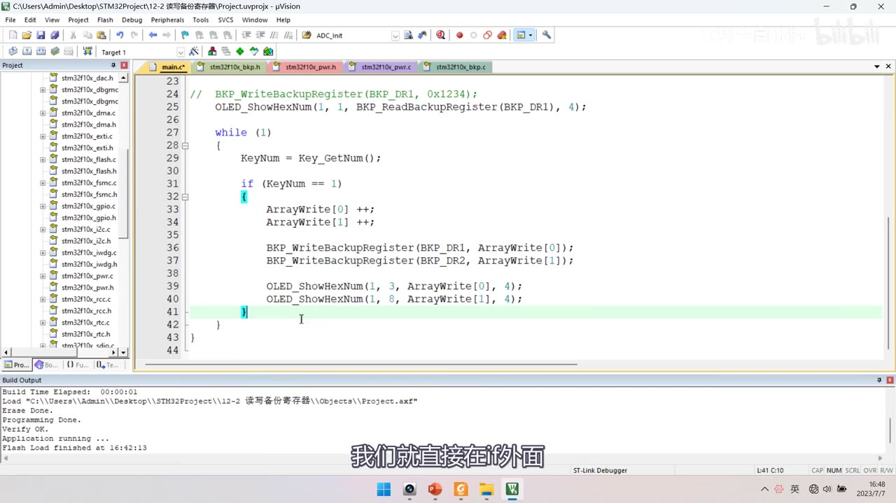
图 5：BKP main.c 主循环——while (1) { KeyNum = Key_GetNum(); if (KeyNum == 1) { ArrayWrite[0] ++; ArrayWrite[1] ++; BKP_WriteBackupRegister(BKP_DR1, ArrayWrite[0]); BKP_WriteBackupRegister(BKP_DR2, ArrayWrite[1]); OLED_ShowHexNum(1, 3, ArrayWrite[0], 4); OLED_ShowHexNum(1, 8, ArrayWrite[1], 4); } …；字幕「我们就直接在if外面」
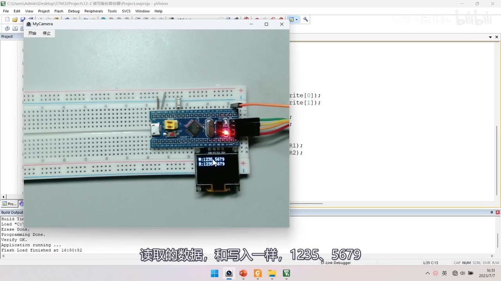
图 6：BKP 现象——OLED 显示 W:1235 5679 / R:1235 5679，写入与读取完全一致；字幕「读取的数据，和写入一样，1235、5679」
3. 程序②：实时时钟（RTC）
3.1 建模块与初始化流程
- 复制 OLED 工程改名
12-2 实时时钟；新建 MyRTC 模块（放在 System 目录，模块名MyRTC）； - 初始化流程（对照上一集的基本结构图与注意事项）：
- 开 PWR+BKP 时钟、使能访问；
- 启动 RTC 的时钟——计划用 LSE（LSE 为了省电默认是关闭的，需要手动开启）；
- 配置 RTCCLK 数据选择器（在 RCC 模块里）；
- 调用两个等待函数（
RTC_WaitForSynchro等同步、RTC_WaitForLastTask等上次写完）； - 配置预分频器 PRL，保证输出给计数器的频率是 1Hz；
- 配置 CNT 的值（初始时间）；
- （可选）配置闹钟/中断；
- 重要特点：RTC 比较简单，库函数没有用结构体来配置，也没有
RTC_Cmd这样的函数——开启时钟就能自动运行。
3.2 RCC 侧与 rtc.h 库函数
RCC 侧（3 个函数）：
| 函数 | 作用 |
|---|---|
RCC_LSEConfig(RCC_LSE_ON) |
配置 LSE 外部低速时钟（参数有 RCC_LSE_ON/OFF/BYPASS 三个；BYPASS＝时钟旁路，可直接从外部输入时钟信号，不接晶振也能当时钟源） |
RCC_GetFlagStatus(RCC_FLAG_LSERDY) |
等待 LSE 启动完成——调用启动函数后必须等 LSERDY 置 1，时钟才算真正启动 |
RCC_RTCCLKConfig(RCC_RTCCLKSource_LSE) |
选择 RTCCLK 的时钟源（LSE / LSI / HSE÷128） |
RCC_RTCCLKCmd(ENABLE) |
使能 RTC 时钟 |
stm32f10x_rtc.h 里的函数：
| 函数 | 作用 |
|---|---|
RTC_ITConfig / RTC_GetFlagStatus / RTC_ClearFlag / RTC_GetITStatus / RTC_ClearITPendingBit |
中断与标志位 |
RTC_EnterConfigMode / RTC_ExitConfigMode |
置/清 RTC_CRL 的 CNF 位（进入/退出配置模式）——写 PRL/CNT/ALR 的函数内部自带，不用手动调 |
RTC_GetCounter |
获取 CNT 计数器的值（秒数） |
RTC_SetCounter(uint32_t CounterValue) |
写入 CNT 计数器的值 |
RTC_SetPrescaler(uint32_t PrescalerValue) |
写入预分频器 PRL |
RTC_SetAlarm(uint32_t AlarmValue) |
写闹钟值 ALR |
RTC_GetDivider |
读 DIV 余数寄存器——一般用来得到更细致的时间（厘秒/毫秒） |
RTC_WaitForLastTask |
等待上次操作完成：循环等 RTOFF＝1 |
RTC_WaitForSynchro |
等待同步：等 RSF＝1 |
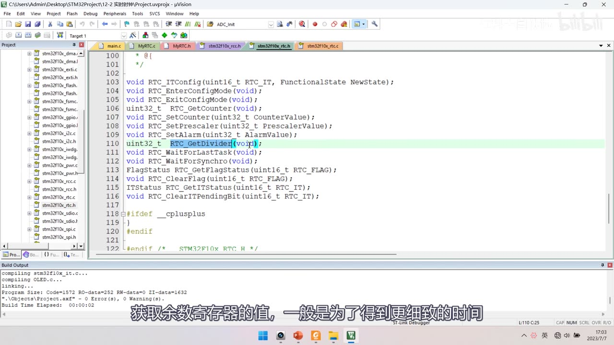
图 7：stm32f10x_rtc.h 函数声明表——RTC_ITConfig、RTC_EnterConfigMode、RTC_ExitConfigMode、RTC_GetCounter、RTC_SetCounter、RTC_SetPrescaler、RTC_SetAlarm、RTC_GetDivider（高亮）、RTC_WaitForLastTask、RTC_WaitForSynchro、RTC_GetFlagStatus、RTC_ClearFlag、RTC_GetITStatus、RTC_ClearITPendingBit；字幕「获取余数寄存器的值，一般是为了得到更细致的时间」
3.3 MyRTC_Init（八步，顺序就是核心）
void MyRTC_Init(void)
{
/* ① 开 PWR / BKP 时钟，② 使能对 BKP 和 RTC 的访问 */
RCC_APB1PeriphClockCmd(RCC_APB1Periph_PWR, ENABLE);
RCC_APB1PeriphClockCmd(RCC_APB1Periph_BKP, ENABLE);
PWR_BackupAccessCmd(ENABLE);
/* ③ 启动 LSE，④ 等待 LSE 就绪 */
RCC_LSEConfig(RCC_LSE_ON);
while (RCC_GetFlagStatus(RCC_FLAG_LSERDY) != SET);
/* ⑤ 选择 RTCCLK 时钟源，⑥ 使能 RTC 时钟 */
RCC_RTCCLKConfig(RCC_RTCCLKSource_LSE);
RCC_RTCCLKCmd(ENABLE);
/* ⑦ 等同步 + 等上一步写完 */
RTC_WaitForSynchro();
RTC_WaitForLastTask();
/* ⑧ 预分频 32768 → 1Hz；设置初始时间（Unix 时间戳） */
RTC_SetPrescaler(32768 - 1);
RTC_WaitForLastTask();
RTC_SetCounter(1672588795);
RTC_WaitForLastTask();
}
- 为什么预分频写
32768 - 1：LSE 频率 32.768kHz＝32768Hz，而分频计数值包含 0，所以写 32767 才是 32768 分频 → 1Hz； - 每个写操作后都要
RTC_WaitForLastTask()：写寄存器的值不会立刻生效，要等上一次写真正完成； - 配置模式不用手动进出：
RTC_SetCounter/RTC_SetPrescaler等函数内部会自动进入并退出配置模式（置/清 CNF）； - 初始时间
RTC_SetCounter(1672588795)是 PPT 里那个例子（2023-1-1 15:59:55 伦敦时间）；这一步不是必须的——不预设就当 0，time.h解析出来就是 1970 年； - 两个等待函数是「安全保障措施」：防止因时钟不同步造成 bug，正常情况下不写一般也没大问题；
- 注意 RTC 没有
RTC_Cmd、没有结构体——开时钟后计数器自动以 1 秒间隔走。
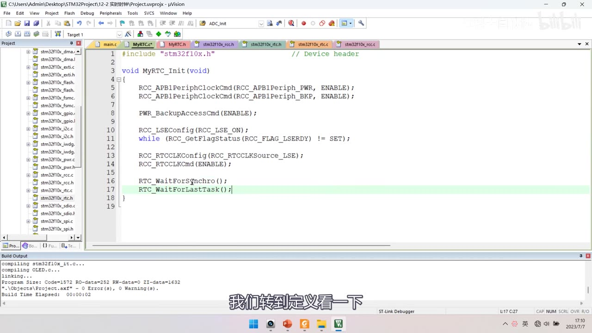
图 8：MyRTC_Init 前半（MyRTC.c）——RCC_APB1PeriphClockCmd(RCC_APB1Periph_PWR, ENABLE);、RCC_APB1PeriphClockCmd(RCC_APB1Periph_BKP, ENABLE);、PWR_BackupAccessCmd(ENABLE);、RCC_LSEConfig(RCC_LSE_ON);、while (RCC_GetFlagStatus(RCC_FLAG_LSERDY) != SET);、RCC_RTCCLKConfig(RCC_RTCCLKSource_LSE);、RCC_RTCCLKCmd(ENABLE);、RTC_WaitForSynchro();、RTC_WaitForLastTask();；字幕「我们转到定义看一下」
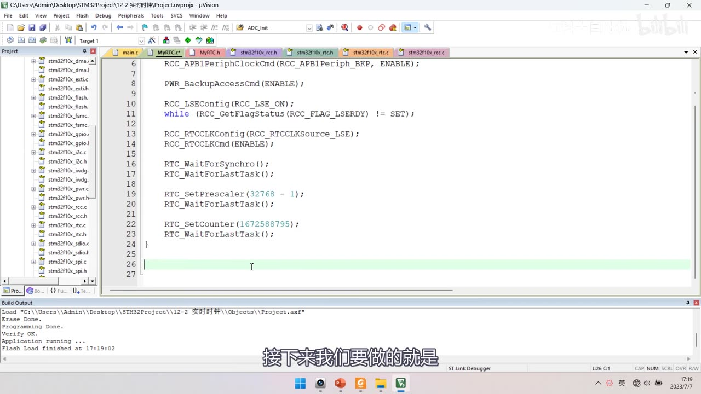
图 9：MyRTC_Init 完整尾部——RTC_SetPrescaler(32768 - 1);、RTC_WaitForLastTask();、RTC_SetCounter(1672588795);、RTC_WaitForLastTask();；字幕「接下来我们要做的就是」
3.4 main 初测与现象
#include "MyRTC.h"
int main(void)
{
OLED_Init();
MyRTC_Init();
OLED_ShowNum(1, 1, RTC_GetCounter(), 10); /* 1 行 1 列显示 CNT */
while (1) { }
}
- 现象：下载后数字按 1 秒间隔自增，说明 RTC 正常运行；
- ⚠ 常见坑：有些板子 RTC 晶振起振不了，程序会卡在
while (... LSERDY ...)那里；- 备选方案：改用内部低速时钟 LSI：
RCC_LSICmd(ENABLE)+ 等RCC_FLAG_LSIRDY+RCC_RTCCLKSource_LSI+RTC_SetPrescaler(40000 - 1)（LSI 是 40kHz）； - 根治起振问题要从硬件下手（换晶振、调起振电容），有条件的话再研究。
- 备选方案：改用内部低速时钟 LSI：
3.5 MyRTC_SetTime / MyRTC_ReadTime
uint16_t MyRTC_Time[] = {2023, 01, 01, 23, 59, 55}; /* 年 月 日 时 分 秒 */
void MyRTC_SetTime(void)
{
time_t time_cnt;
struct tm time_date;
time_date.tm_year = MyRTC_Time[0] - 1900;
time_date.tm_mon = MyRTC_Time[1] - 1;
time_date.tm_mday = MyRTC_Time[2];
time_date.tm_hour = MyRTC_Time[3];
time_date.tm_min = MyRTC_Time[4];
time_date.tm_sec = MyRTC_Time[5];
time_cnt = mktime(&time_date); /* 日期时间 → 秒数（当地） */
RTC_SetCounter(time_cnt);
RTC_WaitForLastTask();
}
void MyRTC_ReadTime(void)
{
time_t time_cnt;
struct tm time_date;
time_cnt = RTC_GetCounter(); /* 读秒数 */
time_date = *localtime(&time_cnt); /* 秒数 → 日期时间 */
MyRTC_Time[0] = time_date.tm_year + 1900;
MyRTC_Time[1] = time_date.tm_mon + 1;
MyRTC_Time[2] = time_date.tm_mday;
MyRTC_Time[3] = time_date.tm_hour;
MyRTC_Time[4] = time_date.tm_min;
MyRTC_Time[5] = time_date.tm_sec;
}
- 数组顺序是「年/月/日/时/分/秒」；整个数组用
uint16_t——因为年份 2023 超过了uint8_t的范围（作者说「稍微浪费」）； - SetTime 三步：① 把数组填进
struct tm（年减 1900、月减 1）②mktime得到秒数 ③ 写入 RTC 的 CNT； - ReadTime 是反过程：读 CNT →
localtime→ 回填数组（年加 1900、月加 1）； - 头文件
MyRTC.h：#ifndef __MYRTC_H/#define __MYRTC_H、全局数组声明要加extern、三个函数原型（MyRTC_Init/MyRTC_SetTime/MyRTC_ReadTime）、#endif； - 如果用全局数组传参，要注意单个变量必须加
extern，数组也要extern。
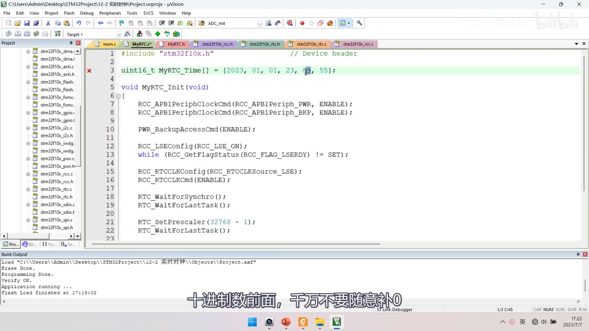
图 10：MyRTC.c 开头的全局数组——uint16_t MyRTC_Time[] = {2023, 01, 01, 23, 59, 55};（回车位置有红叉，正是因为 09 这类前导 0 会报错），下方是 MyRTC_Init 前半；字幕「十进制数前面，千万不要随意补0」
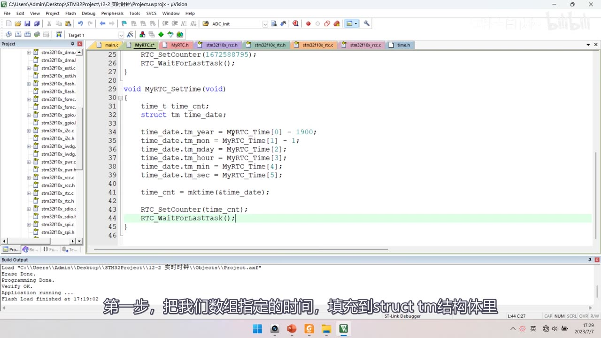
图 11：MyRTC_SetTime 完整——time_t time_cnt; struct tm time_date;、time_date.tm_year = MyRTC_Time[0] - 1900;、tm_mon = MyRTC_Time[1] - 1;、tm_mday = MyRTC_Time[2];、tm_hour = MyRTC_Time[3];、tm_min = MyRTC_Time[4];、tm_sec = MyRTC_Time[5];、time_cnt = mktime(&time_date);、RTC_SetCounter(time_cnt);、RTC_WaitForLastTask();；字幕「第一步，把我们数组指定的时间，填充到struct tm结构体里」
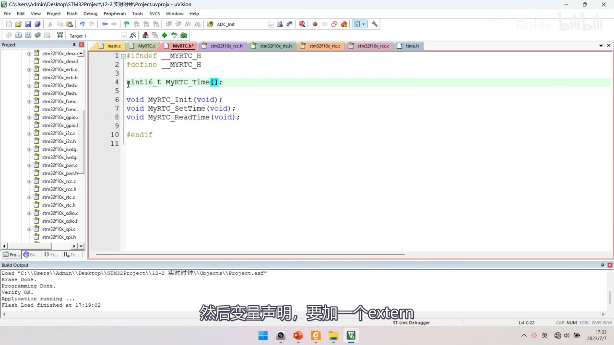
图 12：MyRTC.h——#ifndef __MYRTC_H / #define __MYRTC_H、全局数组声明（int16_t MyRTC_Time[];，此处还需加 extern）、void MyRTC_Init(void);、void MyRTC_SetTime(void);、void MyRTC_ReadTime(void);、#endif；字幕「然后变量声明，要加一个extern」
3.6 main 显示与现象
OLED_ShowString(1, 1, "Date:XXXX-XX-XX");
OLED_ShowString(2, 1, "Time:XX:XX:XX");
OLED_ShowString(3, 1, "CNT :");
while (1)
{
MyRTC_ReadTime();
OLED_ShowNum(1, 6, MyRTC_Time[0], 4); /* 年 */
OLED_ShowNum(1, 11, MyRTC_Time[1], 2); /* 月 */
OLED_ShowNum(1, 14, MyRTC_Time[2], 2); /* 日 */
OLED_ShowNum(2, 6, MyRTC_Time[3], 2); /* 时 */
OLED_ShowNum(2, 9, MyRTC_Time[4], 2); /* 分 */
OLED_ShowNum(2, 12, MyRTC_Time[5], 2); /* 秒 */
OLED_ShowNum(3, 6, RTC_GetCounter(), 10);
}
- 现象：OLED 显示
Date:2023-01-01、Time:23:59:55（这是伦敦时间，因为localtime在 STM32 上默认是 0 时区）、CNT:1672588795； - 注意：此时数组里的时间是没被用到的（初始化时没调用
MyRTC_SetTime），所以显示的是RTC_SetCounter那个初始秒数。
4. 坑与修正（本集重点）
4.1 坑①：C 语言前导 0 是八进制
- 在数组里写
{2023, 01, 01, 23, 09, 55}会报错：C 语言里以 0 开头的数字是八进制，而八进制没有 9——所以09是无效数字，编译报错； - 即使不报错也容易出错：
0123实际是八进制 123（十进制 83），所以if (123 == 0123)是不成立的； - 作者提醒：写 C 语言程序时，十进制数前面千万不要随意补 0（想对齐好看可以补空格）；他之前 51 单片机教程里「密码判断不正确」的 bug 就是这个原因；
- 建议：想「好看」就写
{2023, 1, 1, 23, 59, 55}，或者干脆不加前导 0。
4.2 坑②：函数定义在调用之后会报错
- 在
MyRTC_Init里调用MyRTC_SetTime()，但MyRTC_SetTime的定义写在后面 → 编译报错（函数未声明）； - 两种解决办法：① 前置声明 ② 调整顺序（作者直接把
MyRTC_SetTime的定义挪到MyRTC_Init前面）； - 头文件里：全局数组/变量声明要加
extern，三个函数原型要写全。
4.3 时区偏移（关键收尾）
- STM32 上没有「系统时区」概念：
localtime和gmtime都按 0 时区（伦敦）处理（time()在裸机上也不能用，所以时钟没有时区信息）； - 所以想显示真正的北京时间，必须自己做偏移：
- 读取时：在秒数上加
8 * 60 * 60（28800 秒） →time_cnt = RTC_GetCounter() + 8*60*60;再localtime； - 写入时：先把秒数减
8 * 60 * 60再写入 CNT；
- 读取时：在秒数上加
- 为什么不能在「小时」上直接 +8：要考虑进位（23 点 +8 会跨天、跨月），在秒数上加减才严谨；
- 现象（时区偏移后）：OLED 显示
Date:2023-01-02、Time:00:00:12、CNT:1672617615——与 PPT 里「北京时间 ↔ 时间戳」的对应关系一致。
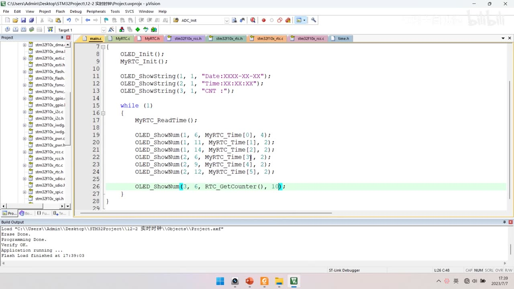
图 13：RTC main.c 完整——OLED_Init(); MyRTC_Init();、OLED_ShowString(1,1,"Date:XXXX-XX-XX");、(2,1,"Time:XX:XX:XX");、(3,1,"CNT :");、while (1) { MyRTC_ReadTime(); OLED_ShowNum(1,6,MyRTC_Time[0],4); (1,11,[1],2); (1,14,[2],2); (2,6,[3],2); (2,9,[4],2); (2,12,[5],2); OLED_ShowNum(3,6,RTC_GetCounter(),10); }
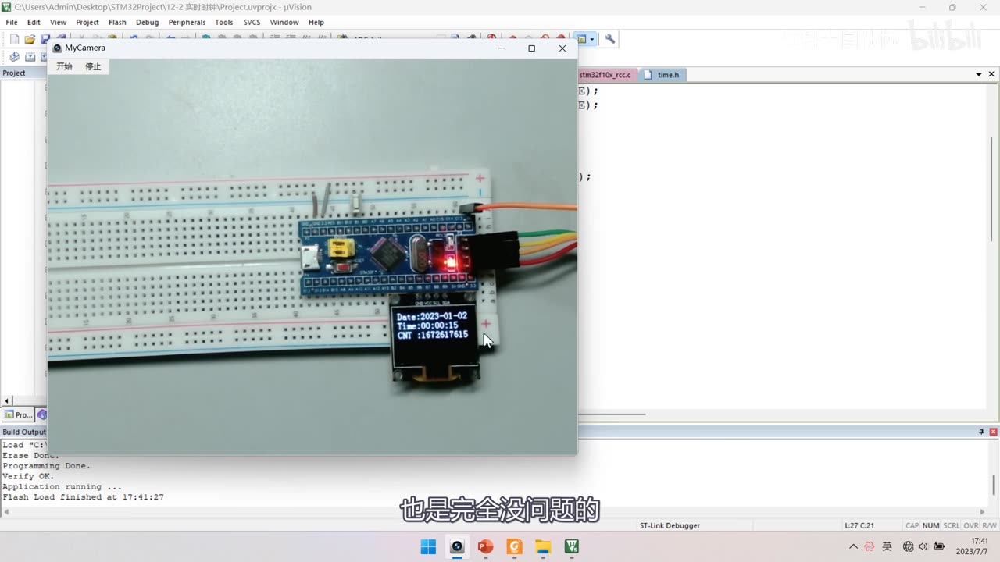
图 14：现象（时区偏移后）——OLED Date:2023-01-02 / Time:00:00:12 / CNT :1672617615，与 PPT 的北京时间↔时间戳对应关系一致；字幕「也是完全没问题的」
4.4 掉电保持：用 BKP_DR1 存标志
- 问题：原来每次复位都会调用
MyRTC_Init→ 里面又调用MyRTC_SetTime()→ 每次复位时间都被重置，这显然不行； - 解决思路：用
BKP_DR1存一个标志值0xA5A5，根据它判断「是不是刚上电/完全断电过」； - 做法：
- 上电先
BKP_ReadBackupRegister(BKP_DR1)； - 不等于
0xA5A5（说明是全新上电或完全断电，DR1 默认 0）→ 执行完整初始化（LSE 启动、预分频、设置时间等），最后BKP_WriteBackupRegister(BKP_DR1, 0xA5A5)写入标志； - 等于
0xA5A5（说明之前初始化过、且备用电池没断）→ 不用重复初始化，只调RTC_WaitForSynchro()+RTC_WaitForLastTask()即可（RTC 一直在走）；
- 上电先
- 验证：按复位键时间继续运行；断主电源时间继续运行；完全断电（连 VBAT 一起断）后 DR1 清零 → 重新初始化。
演示效果：主循环里新增 OLED_ShowString(4, 1, "DIV :") 与 OLED_ShowNum(4, 6, (32767 - RTC_GetDivider()) / 32767 * 999, 10)——DIV 在 32767→0 之间自减，用线性变换把它映射到 0～999（相当于毫秒/厘秒）。
- 换算原理：
RTC_GetDivider()返回当前 DIV 值（32767→0 递减）；32767 - DIV就变成「从 0 递增到 32767」；再/ 32767 * 999缩放成 0～999； - 这样就能得到比「秒」更细致的时间（厘秒/毫秒级）。
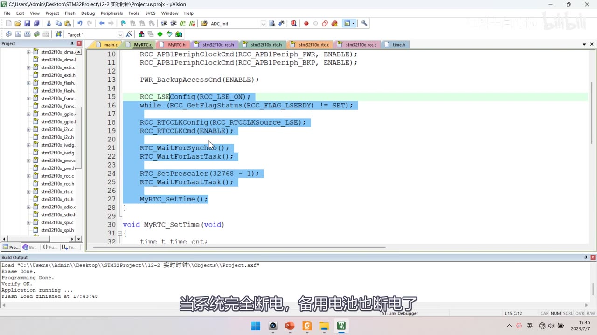
*图 15：MyRTC_Init 全部八步集中可见（整段高亮）——PWR/BKP 时钟、PWR_BackupAccessCmd(ENABLE)、RCC_LSEConfig(RCC_LSE_ON)、while (RCC_GetFlagStatus(RCC_FLAG_LSERDY) != SET);、RCC_RTCCLKConfig(RCC_RTCCLKSource_LSE)、RCC_RTCCLKCmd(ENABLE)、RTC_WaitForSynchro()、RTC_WaitForLastTask()、RTC_SetPrescaler(32768 - 1)、RTC_WaitForLastTask()，最后调用 MyRTC_SetTime();；字幕「当系统完全断电，备用电池也断电了」*
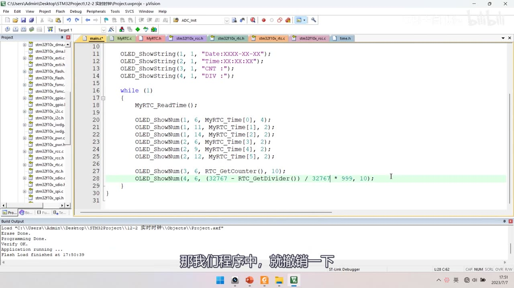
*图 16：DIV 线性变换——OLED_ShowString(4, 1, "DIV :"); 与 OLED_ShowNum(4, 6, (32767 - RTC_GetDivider()) / 32767 * 999, 10);；字幕「那我们程序中，就撤销一下」*
坑与易错点
- 两个程序别混：
12-2 读写备份寄存器（BKP+按键）与12-2 实时时钟（RTC，无按键）是两个独立工程。 - VBAT 用 ST-Link 的 3.3V 模拟，绝不能接 5V（VBAT 不支持 5V）——这是实验接法，产品用 3V 纽扣电池。
- PWR 和 BKP 时钟都要开：只开 BKP 不行，
PWR_BackupAccessCmd依赖 PWR 时钟。 BKP_DRx只有 DR1～DR10（F103C8T6 中容量）：口述 1～42 是全部型号的上限。- RTC 没有结构体和
RTC_Cmd：开 RTCCLK 后计数器自动运行。 - LSE 默认关闭：必须
RCC_LSEConfig(RCC_LSE_ON)并等 LSERDY；晶振起振不了会卡在这里（可改用 LSI +40000-1）。 - 预分频写
32768-1（计数值含 0）：写 32768 就是 32769 分频了。 - 每个 RTC 写操作后都要
RTC_WaitForLastTask()：写值不会立刻生效。 - 不用手动 Enter/ExitConfigMode：
RTC_SetCounter/SetPrescaler内部自带。 - C 前导 0 是八进制：
09报错、0123 != 123——十进制常量别补 0。 - 函数定义在调用之后会报错：前置声明或调序；头文件里全局变量/数组要
extern。 MyRTC_Time[]用uint16_t：因为 2023 超uint8_t；顺序是年/月/日/时/分/秒。tm_year要 -1900、tm_mon要 -1（写时），读回来要 +1900、+1。- STM32 上
localtime/gmtime都是 0 时区：显示北京时间要在秒数上 ±8×3600（不能在小时上直接 +8，会跨进位）。 - 每次复位重置时间的问题：用
BKP_DR1存0xA5A5标志判断是否需要完整初始化。 RTC_GetDivider()的 DIV 是 32767→0 自减：(32767-DIV)/32767*999映射到 0～999。
时间轴
| 时间 | 内容 |
|---|---|
| 0:02 | 本小节开始写代码，先看接线图 |
| 0:06 | 打开 12-1 的图片 |
| 0:08 | 这是读写 BKP 程序的接线 |
| 0:11 | 右下角是 OLED 显示屏 |
| 0:13 | PB1 引脚接按键 |
| 0:17 | 在板子的右上角 |
| 0:19 | 这个 VB 或者叫 VBAT 引脚 |
| 0:23 | 是备用电池的供电脚 |
| 0:26 | 实际应用需要备用电池时 |
| 0:27 | 一般接 3V 的纽扣电池 |
| 0:32 | PPT 里给了两种参考电路 |
| 0:36 | 我们进行实验的话 |
| 0:38 | 可以直接从 ST-Link 引出 |
| 0:42 | 接到 VBAT 引脚也可以 |
| 0:44 | 因为套件里没配纽扣电池 |
| 0:48 | 这里注意一定要从 3.3V 引脚出来 |
| 0:52 | 从引脚标号上看 |
| 0:53 | 都是 3.3V 供电 |
| 0:59 | VBAT 是不支持 5V 供电的 |
| 1:03 | 这就是读写 BKP 程序的接线 |
| 1:07 | RTC 程序的接线图 |
| 1:14 | VBAT 引脚接 3.3V 备用电源 |
| 1:17 | RTC 程序暂时没用到按键 |
| 1:20 | RTC 的外部低速晶振 |
| 1:26 | 这个晶振电路板子上自带 |
| 1:27 | 所以 RTC 晶振部分不用管 |
| 1:31 | 这就是两个程序的接线图 |
| 1:33 | 看一下面包板，接一下线路 |
| 1:36 | 首先在 PB1 接一个按键 |
| 1:44 | 用一根公对母的杜邦线 |
| 1:45 | 一头接在板子右上角的 VBAT |
| 1:47 | 另一头接 ST-Link 的 3.3V 输出 |
| 1:52 | 一定不要接到 5V 的供电引脚 |
| 1:55 | 硬件接线完成 |
| 2:00 | 回到工程文件夹 |
| 2:03 | 复制 OLED 显示屏的代码 |
| 2:18 | 编译一下 |
| 2:24 | 这个程序怎么写 |
| 2:27 | 就是简单的读写 BKP 功能 |
| 2:31 | 大体步骤 |
| 2:41 | 有关 BKP 的代码 |
| 2:52 | 也是非常简单的 |
| 2:53 | 看 PPT 最后的注意事项 |
| 2:58 | 就是这两行 |
| 3:00 | 开启 PWR 和 BKP 的时钟 |
| 3:03 | 函数使能对 BKP 和 RTC 的访问 |
| 3:09 | BKP 有个写入函数 |
| 3:12 | BKP 也有个读取函数 |
| 3:15 | 这就是大体思路 |
| 3:20 | 打开 bkp.h |
| 3:25 | 这些是 BKP 所有的库函数 |
| 3:29 | BKP_DeInit 恢复缺省配置 |
| 3:35 | 可以手动清空 BKP 所有数据寄存器 |
| 3:39 | 如果有备用电池，BKP 数据主电源掉电不清零 |
| 3:45 | 它就没有清零的时候 |
| 3:47 | 如果确实想清零怎么办 |
| 3:50 | 用这个函数 |
| 3:52 | 所有 BKP 数据都会变成 0 |
| 4:18 | 就是高电平触发还是低电平触发 |
| 4:20 | 就是是否开启侵入检测功能 |
| 4:24 | 如果需要侵入检测的话 |
| 4:37 | 这是时钟输出功能的配置 |
| 4:55 | 这个就是写入 RTC 校准寄存器 |
| 5:01 | 这些功能了解即可 |
| 5:13 | 你要写在哪个 DR 里 |
| 5:19 | 一个 16 位的整型数据 |
| 5:24 | BKP_ReadBackupRegister 读备份寄存器 |
| 5:29 | 返回值就是 DR 里存的值 |
| 5:38 | BKP 的所有函数就清楚了 |
| 5:43 | 然后还要看一下 pwr.h |
| 5:49 | 这是 PWR 外设的库函数 |
| 5:52 | PWR 外设下节再讲 |
| 6:05 | 这个函数的内容 |
| 6:07 | 就是设置 PWR_CR 寄存器里的 DBP 位 |
| 6:11 | 对应 PPT 这里写的使能访问 |
| 6:31 | 初始化第一步：开启 PWR 和 BKP 时钟 |
| 6:38 | 这两个都是 APB1 的设备 |
| 6:53 | 开启外设时钟，第二个参数 ENABLE |
| 7:06 | 接下来 PPT 第二步 |
| 7:09 | 使能对 BKP 和 RTC 的访问 |
| 7:14 | 用刚才看的 PWR 备份访问控制函数 |
| 7:19 | 放到这里，给 ENABLE |
| 7:29 | 读函数读出 |
| 7:31 | 调用写函数 |
| 7:36 | 转到定义看 |
| 7:42 | 这个参数可以是 BKP_DRx |
| 7:45 | 其中 x 可以是 1～42 之间 |
| 7:49 | 复制这个 BKP_DRx 放到这里 |
| 7:53 | 可以替换成 1～42 之间的数字 |
| 7:57 | 只有大容量和互联型才有 42 个 DR |
| 8:02 | 中容量 DR 的范围是 1～10 |
| 8:12 | 这是 uint16 类型的数据 |
| 8:21 | 那写入对不对呢 |
| 8:23 | 读出来看看就知道了 |
| 8:24 | 读取 BKP 用这个读取函数 |
| 8:28 | 读取哪个 DR 呢 |
| 8:31 | 读刚才写入数据的 DR1 |
| 8:34 | 读取的值作为返回值返回 |
| 8:37 | 用 OLED 显示 |
| 8:54 | 下载测试 |
| 8:59 | OLED 显示的是 1234 |
| 9:02 | 初步测试没问题 |
| 9:08 | 由备用电池维持 |
| 9:15 | 我们不在 BKP 写入数据 |
| 9:21 | 看看现象 |
| 9:28 | 目前芯片没有掉电过 |
| 9:31 | 所以 BKP 数据保持原样 |
| 9:34 | 数据仍然是 1234 |
| 9:37 | 复位不会清空 BKP |
| 9:40 | 之后再测试 |
| 9:41 | 把主电源断电 |
| 9:44 | 数据仍然是 1234 |
| 9:49 | 把备用电源拔掉 |
| 9:55 | BKP 数据就清零了 |
| 9:57 | 没有备用电源就维持不了 |
| 10:03 | 符合实验预期 |
| 10:05 | 这就是对 BKP 的测试 |
| 10:08 | 最后再完善 |
| 10:25 | 数据可以随便给两个 |
| 10:43 | 在 OLED 初始化之后 |
| 10:47 | OLED_ShowString(1, 1, "W:"); |
| 10:56 | 表示后面是写入的数据 |
| 11:04 | 表示后面是读取的数据 |
| 11:10 | 这样测试才更全面 |
| 11:12 | 把按键功能也拿过来 |
| 11:15 | 看之前写好的 Key.h |
| 11:18 | 定义存放键值的变量 KeyNum |
| 11:27 | Key_Init |
| 11:33 | 在主循环里实现功能 |
| 11:36 | 按下按键变更数据 |
| 11:39 | 再写入到 BKP 中 |
| 11:59 | 变换数据就是来一个自增 |
| 12:05 | ArrayWrite[0] ++ |
| 12:13 | 就是之前的函数 |
| 12:25 | 我们同时写入两个 |
| 12:26 | 说明读写多个 DR 也没问题 |
| 12:31 | 可以显示 |
| 12:48 | 显示写入的数据 |
| 12:51 | 那读取数据呢 |
| 12:54 | 在主循环里不断读取刷新显示 |
| 13:07 | 把它放到 ArrayRead 里 |
| 13:19 | 最后调用 OLED 显示 |
| 13:28 | 放在第二行，换成 ArrayRead |
| 13:53 | 程序思路：如果按键按下 |
| 13:57 | 测试数据分别写入 BKP 的 DR1 和 DR2 |
| 14:06 | 没有按键按下时 |
| 14:09 | 也不断读取 DR1 和 DR2 刷新显示 |
| 14:17 | 这就是测试程序的逻辑 |
| 14:20 | 下载试一下 |
| 14:24 | 目前 W 后面什么都没显示 |
| 14:29 | 读出来是 00000000 |
| 14:33 | 按下按键 |
| 14:37 | 写入的是 1235 |
| 14:41 | 写入之前就已经自增了 |
| 14:47 | 不是数组默认的 1234 |
| 15:01 | 读取的数据和写入一样 |
| 15:05 | 继续变换数据 |
| 15:07 | 写入和读取都一样 |
| 15:20 | 这就是这个程序的现象 |
| 15:23 | 有关 BKP 的实验 |
| 15:28 | 知道 BKP 特性、会读写即可 |
| 15:36 | 回到工程文件夹 |
| 15:38 | 还是复制 OLED 的代码 |
| 15:42 | 改一下名字：12-2 实时时钟 |
| 15:53 | 编译一下 |
| 15:58 | 对于 RTC 的代码 |
| 16:00 | 把模块封装一下 |
| 16:03 | 快速建立模块 |
| 16:05 | RTC 就放在 System 目录下 |
| 16:10 | 模块名称叫 MyRTC |
| 16:16 | 后面的步骤快进 |
| 16:27 | 模块建好，初始化函数 void MyRTC_Init(void) |
| 16:40 | 先来梳理初始化流程 |
| 16:42 | 参考 PPT 的基本结构图 |
| 16:46 | 在使用 RTC 外设之前 |
| 16:50 | 同样得执行注意事项第一条 |
| 16:52 | 开启 PWR 和 BKP 的时钟 |
| 17:03 | 启动 RTC 的时钟 |
| 17:04 | 计划使用 LSE 作为时钟 |
| 17:13 | LSE 为了省电默认是关闭的 |
| 17:17 | 所以需要手动开启 |
| 17:28 | 第三步配置 RTCCLK 数据选择器 |
| 17:29 | 也是在 RCC 模块里的 |
| 17:32 | 第四步先别急着往后看 |
| 17:35 | 看注意事项这里 |
| 17:37 | 就是调用两个等待函数 |
| 17:40 | 等待同步 |
| 17:46 | 两个函数照例调用 |
| 17:51 | 第五步配置预分频器 PRL |
| 17:56 | 确保输出给计数器的频率是 1Hz |
| 18:01 | 第六步配置 CNT 的值（初始时间） |
| 18:09 | 如果需要闹钟可以配置中断 |
| 18:12 | 这就是配置 RTC 的步骤 |
| 18:15 | 可以发现 RTC 比较简单 |
| 18:17 | 库函数并没有用结构体配置 |
| 18:20 | RTC 也没有 RTC_Cmd |
| 18:23 | 开启时钟就能自动运行 |
| 18:29 | 流程清楚了 |
| 18:33 | 展开 Library 目录 |
| 18:41 | 在 RCC 库函数里找 |
| 18:48 | 配置 LSE 外部低速时钟用这个函数 |
| 18:58 | 配置 LSI 内部低速时钟 |
| 19:10 | RCC_RTCCLKConfig 选择时钟源 |
| 19:47 | 不是让它启动就能立刻启动 |
| 19:48 | 调用启动函数之后还要等待 |
| 19:52 | 等 RCC 的 LSERDY 置 1 |
| 19:57 | 这个时钟才算启动完成 |
| 20:01 | RCC 时钟部分的函数就了解这么多 |
| 20:20 | 转到定义 |
| 20:29 | 对应 PPT 注意事项 |
| 20:32 | 必须设置 CNF 位 |
| 20:43 | RTC_ExitConfigMode 就是把 CNF 清零 |
| 20:50 | RTC_GetCounter 获取 CNT 的值 |
| 21:01 | 写入 CNT 就靠这个函数 |
| 21:04 | RTC_SetPrescaler 写预分频器 |
| 21:15 | RTC_SetAlarm |
| 21:29 | 余数寄存器一般为了得到更细致的时间 |
| 21:41 | 要厘秒毫秒就靠 DIV 余数寄存器 |
| 21:45 | RTC_WaitForLastTask 等待上次操作完成 |
| 21:53 | 循环直到 RTOFF 为 1 |
| 22:03 | RTC_WaitForSynchro |
| 22:17 | 等待 RSF 置 1 |
| 22:29 | 接下来正式写程序 |
| 22:31 | 回到 MyRTC_Init 函数 |
| 22:37 | 第一步开 PWR 和 BKP 时钟 |
| 22:50 | 第二步使能部分完成 |
| 22:53 | 并等待 LSE 启动完成 |
| 23:09 | 这里有三个参数 |
| 23:10 | LSE_OFF 表示关闭 |
| 23:14 | LSE_ON 表示打开 |
| 23:17 | LSE_BYPASS 表示时钟旁路 |
| 23:22 | 旁路就是可以从外部直接输入时钟 |
| 23:32 | 我们直接接晶振 |
| 23:38 | 所以用第二个参数 |
| 23:45 | 需要等待 LSE 启动完成 |
| 23:50 | 调用 RCC_GetFlagStatus |
| 24:01 | 转到定义找 LSERDY |
| 24:11 | 把标志位放到这里 |
| 24:15 | 实现等待标志位为 1 |
| 24:23 | 标志位 != SET 就死循环 |
| 24:42 | 调用 RCC_RTCCLKConfig |
| 24:50 | 转到定义 |
| 24:53 | LSI、HSE/128 |
| 24:58 | 和 PPT 三个时钟源对应 |
| 25:02 | 目前使用 LSE |
| 25:04 | 还要调用 RCC_RTCCLKCmd |
| 25:22 | 参数给 ENABLE |
| 25:24 | RTCCLK 部分就配置好了 |
| 25:28 | 根据配置步骤 |
| 25:34 | 等上次写入操作完成 |
| 25:37 | 这两个函数刚才都看过 |
| 25:41 | 先调用等待同步函数 |
| 25:47 | 再调用等待上次操作 |
| 26:05 | 这是安全保障措施 |
| 26:08 | 防止时钟不同步造成 bug |
| 26:22 | 正常情况这两行不写也没大问题 |
| 26:37 | 用 RTC_SetPrescaler |
| 26:42 | 参数是分频值 |
| 26:44 | 目前分频器输入时钟是 LSE |
| 26:47 | LSE 频率是 32.768kHz |
| 26:57 | 分频系数要给 32768-1 |
| 27:03 | 因为计数值包含 0 |
| 27:12 | 写操作之后值不会立刻生效 |
| 27:16 | 最好等待一下 |
| 27:42 | 然后还注意到这个注意事项 |
| 27:51 | 要不要进入配置模式 |
| 27:58 | 转到定义看一下 |
| 28:09 | 后面自带退出配置模式 |
| 28:32 | 初始化时设置初始时间 |
| 28:37 | 调用 RTC_SetCounter |
| 28:42 | 一个 32 位的秒计数器 |
| 28:50 | 就用 PPT 里 2023 年 1 月 1 日这个例子 |
| 28:55 | 用于设定初始时间 |
| 28:58 | 这一步不是必须的 |
| 29:00 | 不预设时间就认为是 0 |
| 29:03 | 解析出来就是 1970 年 |
| 29:08 | 写入 CNT 操作结束后 |
| 29:09 | 调用等待函数 |
| 29:16 | 初始化到这里就结束 |
| 29:17 | 就会从这个秒数开始 |
| 29:34 | 编译看没问题 |
| 29:36 | 之后到主函数里 |
| 29:43 | 先 include，然后 MyRTC_Init |
| 29:56 | 读取 CNT 用 RTC_GetCounter |
| 30:07 | 直接用 OLED 显示 |
| 30:19 | 这就是初步的测试程序 |
| 30:22 | 编译下载看 |
| 30:28 | 面包板上确实显示了 |
| 30:33 | 自增的间隔 |
| 30:36 | 说明程序测试成功 |
| 30:38 | 有些板子这个现象确实有问题 |
| 30:42 | 就是 RTC 晶振起振不了 |
| 30:47 | 晶振不起振就会卡在这个位置 |
| 30:59 | 如果晶振确实起振不了 |
| 31:03 | 可以备选内部低速时钟 LSI |
| 31:08 | 程序修改方法是改成 LSICmd |
| 31:16 | 然后等待 LSIRDY 标志位 |
| 31:20 | 配置时钟源 |
| 31:23 | 因为 LSI 是 40kHz |
| 31:26 | 所以预分频改成 40000 |
| 31:30 | 这样就把 RTCCLK 切换到 LSI |
| 31:40 | 时钟也是能正常运行的 |
| 31:47 | 如果外部时钟启动不了可以这样改 |
| 31:52 | 至于如何让外部晶振启动 |
| 31:55 | 可能得从硬件上进行 |
| 32:12 | 把代码还原成 LSE |
| 32:14 | 每次复位都会重置时间 |
| 32:20 | 现在先继续写后续部分 |
| 32:24 | 要写两个函数：设置时间、读取时间 |
| 32:34 | 把读到的秒数转换为年月日时分秒 |
| 32:38 | 把全局数组的年月日时分秒填进去 |
| 32:48 | 这样做程序便于理解 |
| 33:05 | 全局数组名叫 MyRTC_Time |
| 33:09 | 分别存放年月日时分秒 |
| 33:17 | 年 2023、时 23、分 59、秒 55 |
| 33:21 | 年 2023 超过 uint8_t 的范围 |
| 33:25 | 所以整个数组定义成 16 位 |
| 33:29 | 稍微浪费 |
| 33:31 | 之后调用设置时间的函数 |
| 33:36 | 调用读取时间的函数 |
| 33:44 | 注意事项：这个时间值 |
| 33:46 | 最好不要在前面补 0 |
| 33:53 | 目前看着是没问题的 |
| 34:05 | 实际上是八进制的 1 |
| 34:12 | 如果你写 23 点 9 分，补 0 就成了 09 |
| 34:20 | 这就有问题了 |
| 34:23 | 它会报个错误：数字 9 是无效的 |
| 34:30 | 写 C 语言程序千万不要随意补 0 |
| 34:34 | 前面补 0 是没问题的（指空格对齐） |
| 34:49 | 那 123 == 0123 会不会成立呢 |
| 34:51 | 理解了刚才的注意事项就知道不成立 |
| 34:57 | 之前 51 单片机教程里密码判断出错就是这个原因 |
| 35:09 | 回到这个程序 |
| 35:15 | void MyRTC_SetTime(void) |
| 35:32 | 先包含头文件 #include <time.h> |
| 35:40 | 用引号也完全没问题 |
| 35:45 | 右键打开 time.h 看看 |
| 35:48 | 这个文件和 Dev-C++ 里的有些区别 |
| 35:56 | 这里 time_t 的定义是 unsigned int |
| 36:04 | struct tm 里的秒范围是 0～60 |
| 36:10 | 括号里写的是允许偶尔的闰秒 |
| 36:33 | 它也不知道当前处于哪个时区 |
| 36:41 | 目前程序的做法是使用 gmtime |
| 36:49 | 始终都是 0 时区 |
| 37:10 | 那看完这个模块就可以上手了 |
| 37:13 | 先定义两个变量 |
| 37:15 | 一个是 time_t time_cnt |
| 37:20 | 一个是 struct tm time_date |
| 37:26 | 填充到 time_date 里 |
| 37:31 | time_date.tm_year |
| 37:44 | tm_mon 等于第 1 个数据 |
| 37:47 | tm_mday 等于第 2 个数据 |
| 37:50 | tm_hour 等于第 3 个数据 |
| 37:56 | tm_min 等于第 5 个数据 |
| 38:04 | 其中年要减去 1900 |
| 38:10 | 调用 mktime 函数 |
| 38:13 | 参数是 struct tm* |
| 38:18 | 把 time_date 的地址传进去 |
| 38:23 | 返回值是 time_t，赋值给 time_cnt |
| 38:33 | 写入到 CNT 里 |
| 38:35 | 调用 RTC_SetCounter |
| 38:40 | 参数把 time_cnt 传进去 |
| 38:52 | 主要就是三步 |
| 38:58 | 第二步用 mktime 得到秒数 |
| 39:01 | 将秒数写入 RTC 的 CNT |
| 39:05 | 这就是设置时间 |
| 39:08 | 读取时间的函数 |
| 39:10 | void MyRTC_ReadTime(void) |
| 39:23 | 和上面是反过来的 |
| 39:31 | 存储到 time_cnt 里 |
| 39:39 | 参数是 const time_t* |
| 39:42 | 把 time_cnt 的地址传进去 |
| 39:46 | 返回值是 struct tm* |
| 39:51 | 先取内容再赋值给 time_date |
| 39:59 | 其实不转移到数组里 |
| 40:06 | 是为了降低使用难度 |
| 40:12 | 把等号左右反过来 |
| 40:18 | 年应该等于 tm_year 加 1900 |
| 40:29 | 数组第 2 个等于 tm_mday |
| 40:32 | 数组第 3 个等于 tm_hour |
| 40:37 | 数组第 5 个等于 tm_sec |
| 40:42 | 现在可以进行测试 |
| 40:44 | 先把这两个函数 |
| 40:50 | 另外这个全局数组 |
| 40:52 | 声明为外部可调用 |
| 40:56 | 其实就是使用全局变量传参 |
| 41:06 | 变量声明要加 extern |
| 41:09 | 数组的话 |
| 41:12 | 那头文件就是这些东西 |
| 41:15 | 编译一下没问题 |
| 41:17 | 到主函数测试 |
| 41:20 | 先把静态字符串显示 |
| 41:22 | OLED_ShowString(1, 1, "Date:XXXX-XX-XX") |
| 41:34 | 复制一下 |
| 41:56 | 主循环里先调用 MyRTC_ReadTime |
| 42:02 | 调用之后得到 CNT 对应的时间值 |
| 42:20 | 复制一下显示年月日 |
| 42:24 | 显示 Time[1] |
| 42:48 | 2 行 12 列显示 Time[5]，秒 |
| 43:01 | 3 行 6 列显示 CNT 的值 |
| 43:10 | 编译下载看 |
| 43:18 | 2023 年 1 月 1 日 |
| 43:21 | 第二行是时间 |
| 43:23 | 目前是 PPT 示例的这个数 |
| 43:31 | 我们调用的是 localtime |
| 43:37 | 但它的当地时间默认是 0 时区的伦敦时间 |
| 43:41 | 也就是这里的 15 点 59 的时间 |
| 43:50 | 那回到程序 |
| 43:54 | 所以这个数组里的时间是没有用到的 |
| 43:57 | 如果想在初始化时设置时间 |
| 44:02 | 看看 SetTime 函数是否正常 |
| 44:11 | 可以在这里直接调用 MyRTC_SetTime() |
| 44:20 | 这里有个报错 |
| 44:23 | 是因为函数的定义在调用的后面 |
| 44:29 | 把下面这个函数放到调用的前面 |
| 44:42 | 有对应的函数定义或声明即可 |
| 44:49 | 如果程序中途想设置时间 |
| 44:58 | 再调用 SetTime 函数就行 |
| 44:59 | 看看现在的现象 |
| 45:09 | 时间日期的进位都没问题 |
| 45:12 | 计量伦敦时间的钟表 |
| 45:20 | 用这个钟表计北京时间也没问题 |
| 45:25 | 完全符合时间戳的规范 |
| 45:28 | 但真正的北京时间 |
| 45:32 | 在程序中还要进行时区偏移 |
| 45:35 | 其实也很简单 |
| 45:40 | 读取时间时秒计数器转换的是伦敦时间 |
| 45:48 | 表示东八区的北京时间 |
| 45:52 | 但直接加 8 肯定不行 |
| 45:55 | 要考虑进位问题 |
| 46:06 | 所以在秒数上加 8 个小时的秒偏移 |
| 46:09 | 86060 |
| 46:15 | 我们对秒数运算 |
| 46:24 | 写入时间时要对应减去 8 个小时的秒数 |
| 46:28 | 这样就实现了时区转换 |
| 46:30 | 现在这个钟表更加严谨 |
| 46:35 | 编译下载看 |
| 46:39 | 对应秒数后面是 88795 |
| 46:48 | 和 PPT 里写的北京时间与时间戳的对应关系一致 |
| 47:05 | 有关时区偏移的部分就清楚了 |
| 47:11 | 接下来还要完成刚才遗留的问题 |
| 47:12 | 目前每次复位都会重置时间 |
| 47:21 | 时间重置的原因是每次都调用初始化函数 |
| 47:28 | 初始化代码要有判断地执行 |
| 47:34 | 系统完全断电过才执行完整初始化 |
| 47:53 | 如果上电检测到数据没清零 |
| 47:58 | 说明备用电池存在、RTC 可以继续运行 |
| 48:06 | 系统完全断电过 |
| 48:12 | 我们加个 if |
| 48:19 | 先读出 BKP 的 DR1 |
| 48:25 | 它的数据当标志位 |
| 48:41 | 系统完全断电之后 DR1 默认是 0 |
| 48:50 | 来个 BKP 写寄存器写 0xA5A5 |
| 49:02 | DR1 是 A5A5 就说明初始化过了 |
| 49:07 | 并且中途备用电池没断电 |
| 49:10 | 这样就不用重复初始化 |
| 49:14 | 最后加个 else |
| 49:17 | 如果已经初始化过就不初始化 |
| 49:25 | 最好也调一下等待函数 |
| 49:36 | 再测试 |
| 49:46 | 按复位键，时间继续运行 |
| 49:51 | 断掉主电源 |
| 49:57 | 时钟仍然继续运行 |
| 49:59 | 如果完全断电 |
| 50:01 | BKP DR1 的数据自动清零 |
| 50:09 | 这是目前程序的现象 |
| 50:25 | 用 RTC_GetDivider |
| 50:36 | 可以看到 DIV 正在快速自减 |
| 50:40 | 范围是 32767～0 |
| 50:56 | 如果要转换为毫秒 |
| 50:59 | 1 秒等于 1000 毫秒 |
| 51:01 | 要把 32767～0 转换到 0～999 |
| 51:12 | 先用 32767 减去 DIV |
| 51:20 | 再除以 32767 乘以 999 |
| 51:30 | 这样就行了 |
| 51:36 | 可以看到变换范围 |
| 51:39 | 由原来的 32767～0 转换成 0～999 |
| 51:45 | 这就是获取 DIV 后进行线性变换 |
存疑
- 本集文本来自画面硬字幕的 OCR（PP-OCRv4，source=subtitle-ocr，719 段），不是 ASR。错字主要是
寄存器→ 「奇存器」（2 处）、编译→ 「扁译」（2 处）、数据→ 「数居」（20 处）、晶振→ 「显振」、STM32→ 「SIM32/SM32」、运行→ 「云行」（各 1～2 处）；并混入编译/下载输出（Flash Load finished at …）——已按画面/上下文校正。 - 本集是两个独立程序（
12-2 读写备份寄存器与12-2 实时时钟），都从复制 OLED 工程起步——笔记分开写，没有混成一个。 - VBAT 用 ST-Link 的 3.3V 模拟（套件无纽扣电池），绝不能接 5V；这是实验接法（产品方案是 3V 纽扣电池，见 [12-2]）。
BKP_DRx范围：口述 1～42，但只有大容量/互联型才有 42 个 DR；F103C8T6（中容量）只有 DR1～DR10。PWR时钟必须先开：PWR_BackupAccessCmd内部写CR_DBP_BB，没有 PWR 时钟无法置 DBP。- RTC 初始化顺序是本集核心，且每个写操作后都要
RTC_WaitForLastTask()；配置模式由RTC_SetCounter/RTC_SetPrescaler内部进出，不用手动。 - 预分频写
32768-1（计数值含 0）；改 LSI 则写40000-1。 - 晶振起振不了的备选方案（LSI） 只是作者给的临时办法，根治需从硬件下手；笔记照写并注明。
- 两个 C 语言坑已写入「坑与修正」：前导 0 是八进制（
09报错、0123 != 123）、函数定义在调用之后报错（前置声明/调序）；头文件全局数组要extern。 - 时区偏移：STM32 上
localtime/gmtime都是 0 时区，显示北京时间要在秒数上 ±8*60*60（不能在小时字段直接加，会跨进位）；现象数值CNT:1672617615、Date:2023-01-02 / Time:00:00:12均来自画面。 - 掉电保持：用
BKP_DR1存0xA5A5标志判断是否需要完整初始化；完全断电后 DR1 归 0 → 重新初始化。 RTC_GetDivider()的 DIV 是 32767→0 自减，(32767-DIV)/32767*999线性映射到 0～999（厘秒/毫秒）。- 片尾无下集预告：52:00 后是 DIV 线性变换的扩展演示。
- 工程名 12-2 读写备份寄存器 与资料图名 12-1：Keil 标题栏与下载日志（f_00060，放大 5×）显示程序①的工程目录是 12-2 读写备份寄存器（...\STM32Project\12-2 读写备份寄存器\Project.uvprojx），而接线图/资料图的文件名是 12-1 读写备份寄存器.jpg——两者同名不同号，别混。